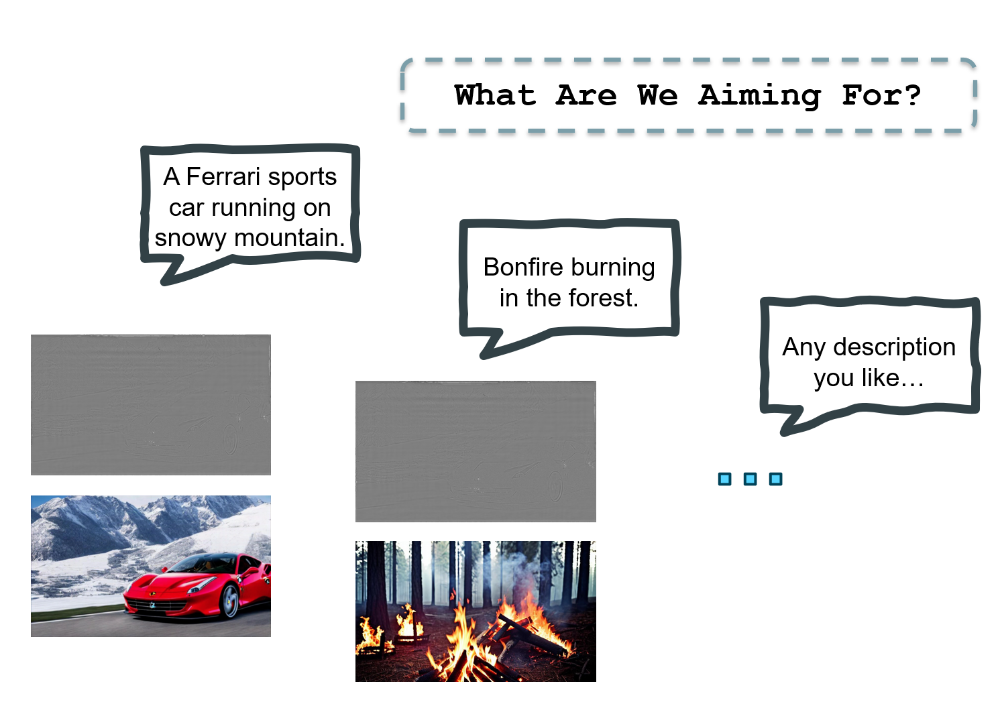

* Except for my face, this oil painting was created by AI.
Hi there! I am Pengze Li
E-mail: LINSONNG@163.COM
I am a college student majoring in Computer Graphics, Vision, and Imaging at University College London (UCL). My primary research interest lies in the intersection of machine learning with visual domains, encompassing areas like Artificial Intelligence Generated Content (AIGC), image processing, and virtual reality.
In the realm of AIGC, I am deeply interested in developing 'text-to-visual' models rooted in latent diffusion techniques. The very ultimate vision is to create models capable of producing logical and imaginative films straight from scripts.
As for virtual reality (VR), I am bullish about its potential. I believe in its transformative capacity as a display medium and am eager to drive research that propels VR to commonplace use.
Key Skills
Python (>3 years)
Deep Learning (Pytorch/TensorFlow/...)
AIGC (Diffusion model, Text2Image)
Unity (Virtual Reality, C#)
Matlab (Modeling, Data Processing)
Drink coffee
Educations
Institution
Degree (GPA)
Year
University College London (UCL)
MSc. in Computer Graphics, Vision and Imaging (Distinction)
2022-now
Beijing University of Posts and Telecommunications (BUPT)
B.Eng. in Electronic Engineering (First-Class)
2018-2022
Beijing 101 Middle School
High School Diploma (A)
2015-2018
Work Experience & Research Experience

Text2hologram: describe your hologram here
04/2023 - 09/2023
Academic Supervisor: Dr. Kaan Aksit
The fusion of natural language processing, image processing, and holography paves the way for unprecedented innovations in the field of computer-generated holography. This dissertation presents text2hologram, a groundbreaking pipeline that leverages deep learning models to transform textual descriptions into phase-only holograms. Aimed at democratizing access to holography and stimulating further research, the pipeline features a modular architecture and offers diverse interaction modes to cater to a wide range of users. This research employs a comprehensive methodology, that includes text-to-image conversion, super-resolution, depth estimation, hologram generation, and reconstruction at specific depth levels. The pipeline's user-centered design is emphasized, highlighting its focus on ease-of-use and reproducibility. Results and sample outcomes are presented, demonstrating the pipeline's efficacy through various intermediate outputs. The dissertation also concludes with a critical discussion where the novelty of the pipeline, its limitations, and potential future directions are examined. The source code is released to both PyPI and Github platforms, and an online Colab web tutorial is presented at here
Multi-Task Learning for Segmentation of Male Pelvic Structures in MRI
03/2023 - 05/2023
Academic Supervisor: Dr Andre Altmann
This research utilizesa publicly accessible database from UCL, comprising 589 T2-weighted MR images of the male pelvic region, with eight anatomical structures segmented. Our approach incorporates multi-task learning (MTL) segmentation for precise definition of these crucial areas. This method enhances the segmentation accuracy by drawing information from adjacent structures with distinct shape characteristics. Tested on four anatomical regions with blurred boundaries and variable shapes, our MTL approach demonstrated superior accuracy, outperforming standalone tasks, the baseline U-Net, and other multitask models. The report is at here.
3-D Painting Virtual Reality Platform
02/2023 - 04/2023
Academic Supervisor: Prof. Anthony Steed
In cooperation with Lucien Li, I completed a virtual reality platform that provides the function of drawing in 3D space and supports online multiplayer collaboration. The platform is done using Unity, run in Unity or a VR headset. The platform is based on Ubiq, UCL's open-source social virtual reality platform. On the left is the perspective of the player in the virtual environment, and another player is drawing eyes on the snowman. The complete final report is at here.
Mean Curvature Skeletons
04/2023 - 05/2023
Academic Supervisor: Prof. Niloy J. Mitra
Building on the concepts in "Mean Curvature Skeletons," this study creates an open-source Python model for deriving skeletons from 3D objects. Using Voronoi poles and the Laplacian matrix, our model iteratively solves equations to approximate an object's skeleton, identifying points near this structure. The model's efficiency is enhanced through optimizations in collapse, eigenvector reconstruction, and Laplace smoothing. This method effectively determines the skeletal structure of complex objects, marking the first open-source Python implementation of this kind. The open source code is at here.
Pedestrian Classification
01/2022 - 06/2022
Academic Supervisor: Dr. Da Guo, Prof. Xile Cao
My graduation project was cooperated with the engineers from Aidong Beyond Artificial Intelligence Technology (Beijing) Co., Ltd. Taking advantage of the private dataset of pedestrians in the factory provided by Aidong, I processed real industrial datasets and completed a pedestrian classification model based on ResNet, in which data augmentation and SE Module are applied. The accuracy (TP+TN)/(TP+FN+FP+TN) is greater than 96% . Considering the needs of the industry, this project ran with TensorFlow.
Image Processing Intern
06/2021 - 06/2022
Institute of Automation, Chinese Academy of Science
Job Responsibilities:
* Stay updated with the state-of-the-art computer vision and deep learning algorithms;
* Implement convolutional neural network (CNN) models on GPU, based on Python and Pytorch;
* Focus on real-time denoising algorithms, with an emphasis on U-Net-based approaches.
* Design, train, evaluate, tune, and accelerate models, one of the results is shown below.
The video shows the denoising results (25 frames) given by a convolutional neural network in 0.5 seconds.
Aerial Image Road Extraction
09/2020 - 06/2022
Academic Supervisor: Dr. Junli Yang
In the CVPR DeepGlobe Road Extraction Challenge, our team developed a novel approach called Multiscale Strip Pooling DLinkNet. We designed a fusion model incorporating various architectures, including ResNet, D-LinkNet, SENet, D-block, Transformer, and several other modules. By employing a pooling feature map to address the challenges associated with narrow and slender features in road extraction tasks, we achieved notable improvements in IoU scores. A patent for this work is currently pending (Patent Application No.: 2023106206149), and a paper detailing our findings will be submitted to the journal Remote Sensing.
National University of Singapore Online Winter Programme: Artificial Intelligence and Machine Learning
01/2021 - 02/2021
Academic Supervisor: Prof. Mehul Motani
Supervised by Assoc. Prof. Mehul Motani, I acquired foundational knowledge in supervised learning algorithms such as Linear Regression, Decision Tree, SVM, and Neural Networks. The program offered hands-on experience in utilizing Python and Jupyter Notebook, incorporating libraries such as Pandas, NumPy, and Scikit-learn. My key project during this period involved predicting the future populations of Singapore and China using the learned models, executed in a team-oriented environment.
Others
College Students’ Innovative Entrepreneurial Training Plan Programs
Title
Supervisor
Year
The Proper Noun Translator in Thai-and-Chinese Language Based on Python
Prof. Jianming Huang
06/2020-05/2021
Internet Meme Searching & Compositing Tool Based on Crawling and Artificial
Prof. Yang Ji
09/2019-07/2020
College Campus Outdoor-scene Navigation System Based on Unity 3D